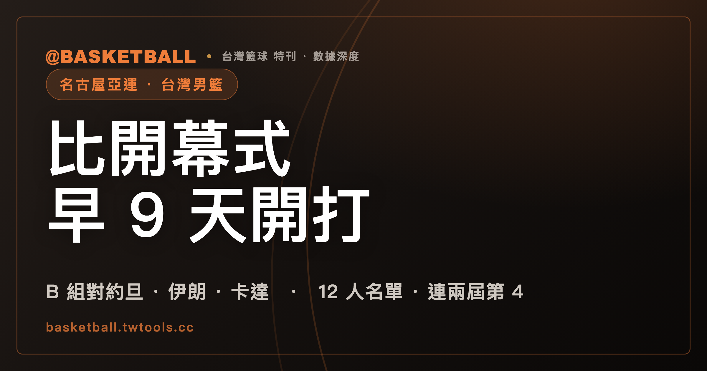

台灣男籃 9 月 10 日開打，比亞運開幕式早 9 天：2026 名古屋亞運前瞻
截至 2026 年 8 月 10 日，台灣男籃已確定在名古屋亞運 B 組迎戰約旦、伊朗與卡達。首戰是 9 月 10 日台灣時間中午 12 時，比開幕式早 9 天。運動部公布的 12 人名單由陳盈駿、林庭謙、劉錚與高柏鎧等人組成。

名古屋亞運 · 台灣男籃｜B 組賽程 · 12 人名單｜亞洲盃第 5 · 連兩屆第 4
中華代表團最早出賽的，不是田徑，也不是游泳。
是男籃。
2026 年愛知・名古屋亞運在 9 月 19 日開幕。台灣男籃卻要在 9 月 10 日就上場。球隊打完 B 組全部 3 場比賽時，開幕式還要再等 6 天。
男籃也是整屆賽會最早開賽的項目。比開幕式早 9 天，不只是行事曆上的特殊安排。這代表台灣代表團的第一個比賽結果，會從籃球場出現。
首戰對手是上屆銀牌約旦。第 2 場碰到 2025 年亞洲盃淘汰台灣的伊朗。第 3 場則是卡達。3 場比賽全排在 4 天之內。
賽程很早。比賽很密。12 人名單則已經先定下來。
台灣男籃在開幕式前 9 天打響全賽會第一戰
第 20 屆亞洲運動會由日本愛知縣與名古屋市主辦，正式會期是 2026 年 9 月 19 日到 10 月 4 日。賽會共有 43 種運動、71 個分項與 469 個小項。
這屆賽會的正式英文名稱是「20th Asian Games Aichi-Nagoya 2026」。從 9 月 19 日開幕到 10 月 4 日閉幕，共有 16 天。男籃的起點卻不在這 16 天裡，而是在正式會期之前。
5 人制男籃不等開幕。男子賽事從 9 月 10 日打到 9 月 20 日，場地是名古屋市北區的愛知國際競技場，也就是冠名後的 IG Arena。女子賽事則從 9 月 17 日打到 9 月 26 日。
台灣男籃 9 月 10 日中午 12 時出賽。自由體育 8 月 8 日的報導指出，男籃預賽是所有項目最早開始的比賽。時間表因此出現少見的畫面：男籃小組賽已經打完，亞運才準備舉行開幕式。
本文時間全部採台灣時間。日本時間比台灣快 1 小時。也就是說，台灣中午 12 時開打的比賽，在日本當地是下午 1 時。
台灣在 B 組的 3 場比賽集中於 4 天內完成
台灣與約旦、伊朗、卡達同在 B 組。3 場小組賽集中在 9 月 10 日到 9 月 13 日之間，中間只有 9 月 11 日沒有比賽。
| 場次 | 對手 | 日期 | 台灣時間 |
|---|---|---|---|
| 第 1 場 | 約旦 | 9 月 10 日（四） | 12：00 |
| 第 2 場 | 伊朗 | 9 月 12 日 | 09：00 |
| 第 3 場 | 卡達 | 9 月 13 日 | 12：00 |
男籃共 12 隊分 3 組。A 組是日本、南韓、沙烏地阿拉伯、印尼；C 組是中國、菲律賓、巴林、哈薩克。小組賽後的晉級規則還沒有見到官方明文，台灣打完 3 場之後會遇到誰，現在還排不出來。
賽程本身已經足夠具體。台灣先打上屆亞運銀牌約旦。休兵 1 天後，早上 9 時迎戰伊朗。再隔不到 1 天，對卡達完成小組賽。
3 個對手的 2026 亞運名單，截至 8 月 10 日都未見報導。哪一隊會帶最強陣容，現在沒有答案。已經發生的是：約旦的上屆銀牌、伊朗對台灣的 3 分勝差、卡達的亞洲盃名次。
約旦上屆摘銀，伊朗在 2025 年亞洲盃淘汰台灣
約旦在 2023 年杭州亞運首度打進男籃決賽，最後以 60：70 不敵菲律賓，拿到銀牌。當屆約旦陣容有具 NBA 資歷的霍林斯傑佛森，也有 3 名身高 210 公分以上的長人。到了 2025 年亞洲盃，約旦排名第 11。
台灣對約旦還有更近的亞運記憶。2023 年四強戰，台灣守不住約旦的歸化球員，輸球後落入銅牌戰。名古屋的第一場，不是面對一個只存在於歷史名次裡的對手，而是再次碰上上屆擋住台灣進決賽的球隊。
伊朗帶來另一種近期壓力。2025 年亞洲盃八強，台灣上半場一度領先 21 分，最終仍以 75：78 遭逆轉。伊朗靠這場勝利晉級四強。名古屋小組賽的第 2 場，就是兩隊在那場 3 分差比賽後的下一個已知大賽交手。
卡達在 2025 年亞洲盃排名第 13，台灣是第 5。同一屆賽事裡，台灣的名次在 3 個小組對手中排在約旦與卡達之前。
3 場對手因此各有一個已知座標。約旦代表上屆亞運的淘汰經驗。伊朗代表最近一屆亞洲盃的逆轉。卡達則有同一屆亞洲盃的名次可供對照。這些座標足以說明小組賽不缺壓力，卻不足以替 4 天內的 3 場比賽預寫結局。
運動部公布的 12 人名單從 18 人培訓陣容縮減而來
運動部在 7 月 14 日公布男籃 12 人名單。總教練是義大利籍的圖齊（Gianluca Tucci），教練團成員還有盧譽誠（教練）、黃冠為（體能教練）與柯煥為（隊職員）。
| 名單 | 球員 |
|---|---|
| 1 | 陳盈駿 |
| 2 | 林庭謙 |
| 3 | 游艾喆 |
| 4 | 劉錚 |
| 5 | 阿巴西 |
| 6 | 盧峻翔 |
| 7 | 李家慷 |
| 8 | 雷蒙恩 |
| 9 | 馬建豪 |
| 10 | 胡瓏貿 |
| 11 | 高柏鎧（Brandon Gilbeck） |
| 12 | 曾祥鈞 |
| 教練團職務 | 姓名 |
|---|---|
| 總教練 | 圖齊（Gianluca Tucci） |
| 教練 | 盧譽誠 |
| 體能教練 | 黃冠為 |
| 隊職員 | 柯煥為 |
6 月中旬公布的培訓名單原有 18 人。高錦瑋、陳冠全、周桂羽、譚傑龍、宋昕澔與歸化球員阿提諾沒有進入最後 12 人。兩名歸化球員候選，最後留下高柏鎧。
高柏鎧是 213 公分中鋒，效力 TPBL 福爾摩沙夢想家。他在 2024 年下半年完成歸化，11 月獲 FIBA 認可代表台灣參加國際賽，並在同月對香港的亞洲盃資格賽完成國家隊首秀。媒體報導稱他為台灣隊史第 4 位歸化球員。
高柏鎧的中文名在 2024 年 7 月啟動歸化時公布，「鎧」字寄託的是成為中華隊鎧甲的期待。
圖齊從 2024 年 11 月亞洲盃資格賽一路帶隊，經過 2025 年亞洲盃，再走到 2026 年亞運。這份 12 人名單因此不是換了教練後重新開始，而是延續最近一段國家隊賽程的人員選擇。
截至 2026 年 8 月 10 日，12 人裡沒有任何傷停報導；名單到開賽前仍可能因傷調整。
林庭謙與劉錚近期的球員動向，集中整理於〈領航猿選了吳志鍇，他卻加盟戰神：2026 台灣職籃休賽季異動總表〉。兩人都在 2026 年的 12 人名單裡，也都打過 2023 年杭州亞運銅牌戰。
台灣帶著 2025 年亞洲盃第 5 名進入名古屋
2025 年 FIBA 亞洲盃，台灣在小組賽先以 95：87 擊敗菲律賓，再以 87：60 擊敗伊拉克。對伊拉克一戰，全隊三分球 37 投 15 中。台灣睽違 12 年重返亞洲盃 8 強。
八強戰對伊朗，台灣上半場曾領先 21 分。終場卻是 75：78。3 分差讓台灣止步八強，最後排名第 5。這是台灣自 2013 年亞錦賽第 4 名後的最佳成績。
第 5 名提供的是現況基礎，不是亞運保證。台灣在亞洲盃贏過菲律賓與伊拉克，也曾把伊朗逼到最後 3 分。另一方面，B 組首戰約旦在同屆亞洲盃排名第 11，卡達排名第 13。
對伊朗那一場，從領先 21 分到輸 3 分，留下的提醒很具體：一段優勢不等於最後結果。名古屋的 B 組，兩隊會再碰一次。
國家隊名單之外，台灣兩個職籃聯盟的並立背景可讀〈為什麼台灣有兩個職籃聯盟？〉。TPBL 與 P. LEAGUE+ 的制度逐項比較，另見〈TPBL 把球員分成 2 種身分，P. LEAGUE+ 分成 4 種〉。
亞運不保證各國都派出最強陣容
亞運籃球有一個容易被忽略的前提：參賽國可以派職業球員，但各國不一定能帶來所有最強人選。
依 NBA 在 2018 年的公開說明，它與 FIBA 的協議允許 NBA 球員參加奧運、FIBA 世界盃、洲際盃，以及這些賽事的資格賽。亞運不在協議涵蓋範圍內。限制的核心是 NBA 是否放行球員，不是亞運禁止職業球員參賽。
2018 年亞運已經出現過具體案例。NBA 起初不放行球員，後來在美國時間 8 月 14 日給出一次性特例，讓菲律賓 1 名、中國 2 名 NBA 球員參賽。一次性特例的存在，也說明亞運不在一般協議的固定範圍內。
亞運場上可以有職業球員，日本 2026 年公布的男子 5 人制名單，12 人中 11 人來自職業聯賽。卡住的只有一件事：NBA 放不放人。
2023 年杭州亞運，菲律賓帶著媒體所稱「集訓 12 天」的陣容出賽。隊上沒有世界盃的歸化主力克拉克森（Jordan Clarkson），但仍有法哈多（June Mar Fajardo）、湯普森（Scottie Thompson）等 4 名世界盃成員。這支陣容最後在決賽擊敗約旦，菲律賓自 1962 年後再度奪金，拿下隊史第 5 冠。歸化球員布朗里（Justin Brownlee）場均得到約 24 分。
自由體育 2023 年報導將日本陣容稱為年輕陣，12 人只有 1 人打過當年的世界盃。到了 2026 年，日本籃協公布的男籃陣容 12 人中 11 人來自職業聯賽，平均年齡約 25 歲。中國媒體稱日本男女籃派「二隊」參加亞運；日本籃協的公告裡只有名單與年齡，「二隊」這兩個字是媒體加上去的。
這些前例把亞運的競爭結構說得很清楚。世界盃名單、亞洲盃名次與亞運名單，不能直接畫上等號。陣容準備時間短，不代表一定失去競爭力。帶來年輕陣容，也不等於自動退出獎牌競爭。
對台灣而言，機會與風險來自同一個地方：對手可能不是最強陣容，也可能是。伊朗、約旦與卡達會帶誰來，8 月中旬還沒有答案。
台灣在 2018 年與 2023 年連續兩屆拿到第 4 名
台灣男籃最近兩屆亞運都停在第 4 名。
2018 年雅加達亞運，台灣排名第 4。2023 年杭州亞運，台灣又一次進入四強。四強賽輸給約旦後，銅牌戰以 73：101 不敵中國。
杭州銅牌戰的比分沒有完整呈現比賽轉折。台灣上半場以 49：46 領先。第 3 節卻被中國打出 19：2 的攻勢，局面就此改變。林庭謙得到 20 分，劉錚得到 14 分。兩人都在 2026 年名古屋亞運 12 人名單內。
同一份名單裡的延續不只在兩個名字。2026 年的總教練圖齊已經帶隊打過 2025 年亞洲盃，12 人陣容也從 18 人培訓名單縮減完成。名古屋的問題不是台灣能不能第一次摸到四強門口，而是能不能把最近兩屆都到過的位置，往獎牌台再推進一步。
這也讓 B 組首戰更有歷史重量。約旦不只是上屆銀牌，也是 2023 年四強戰擊敗台灣的球隊。台灣要先從同一個對手開始，再決定能不能走到不同的位置。
台灣 3x3 男籃帶著杭州金牌前往名古屋衛冕
5 人制男籃連兩屆第 4，台灣籃球目前握有的亞運金牌來自 3x3 男籃。
台灣在杭州亞運拿下 3x3 男子組金牌。名古屋亞運由葉惟捷、張俊生、徐堂琪與鄒子羲出賽，目標是衛冕。3x3 賽事從 9 月 21 日打到 9 月 25 日，場地設在名古屋金城埠頭站前特設球場。
中華女籃 12 人名單也已公布，由彭詩晴領軍，總教練是前田顯藏。女籃分在 C 組，將依序在 9 月 18 日對蒙古、9 月 21 日對馬來西亞、9 月 22 日對南韓。女子 3x3 則由張聿敏、游沁樺、蔡佑蓮與陳薇涵參賽。
男籃是中華代表團最早登場的項目。3x3 男籃則帶著上屆金牌壓軸接棒。從 9 月 10 日到 9 月 25 日，台灣籃球會在開幕式之前先開始，也會在開幕式之後繼續守住另一條衛冕路線。
常見問題
台灣男籃在 2026 名古屋亞運什麼時候出賽？
台灣男籃在 9 月 10 日、9 月 12 日與 9 月 13 日進行 B 組小組賽。3 場均為台灣時間，依序是 9 月 10 日 12：00 對約旦、9 月 12 日 09：00 對伊朗、9 月 13 日 12：00 對卡達。日本時間比台灣快 1 小時。
為什麼台灣男籃比亞運開幕式更早出賽？
2026 名古屋亞運開幕式在 9 月 19 日，5 人制男籃賽事則從 9 月 10 日開始。男籃是整屆賽會最早開賽的項目，因此台灣代表團會先由男籃出賽，比開幕式早 9 天。
台灣男籃的 12 人名單有哪些球員？
12 人是陳盈駿、林庭謙、游艾喆、劉錚、阿巴西、盧峻翔、李家慷、雷蒙恩、馬建豪、胡瓏貿、高柏鎧（Brandon Gilbeck）與曾祥鈞。總教練為圖齊（Gianluca Tucci），教練團成員還有盧譽誠、黃冠為與柯煥為。
12 人名單選入哪一位歸化球員？
18 人培訓名單原有兩名歸化球員候選，正式 12 人名單最後選入高柏鎧（Brandon Gilbeck）。高柏鎧是 213 公分中鋒，效力 TPBL 福爾摩沙夢想家。
亞運男籃是否禁止職業球員參賽？
不是。亞運沒有禁止職業球員。依 NBA 在 2018 年的公開說明，它與 FIBA 的協議涵蓋奧運、FIBA 世界盃、洲際盃及相關資格賽，但不涵蓋亞運。2018 年 NBA 曾以一次性特例放行 3 名球員參加亞運。
台灣男籃最近兩屆亞運拿到第幾名？
台灣男籃在 2018 年雅加達亞運與 2023 年杭州亞運都是第 4 名。2023 年台灣在四強賽不敵約旦，銅牌戰再以 73：101 不敵中國。